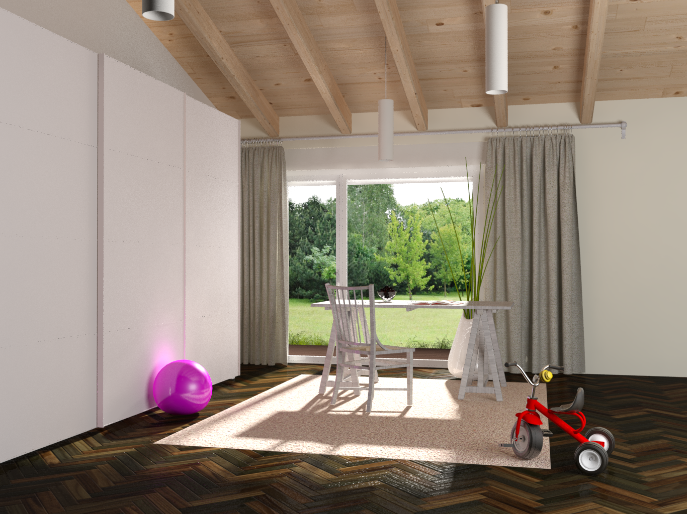
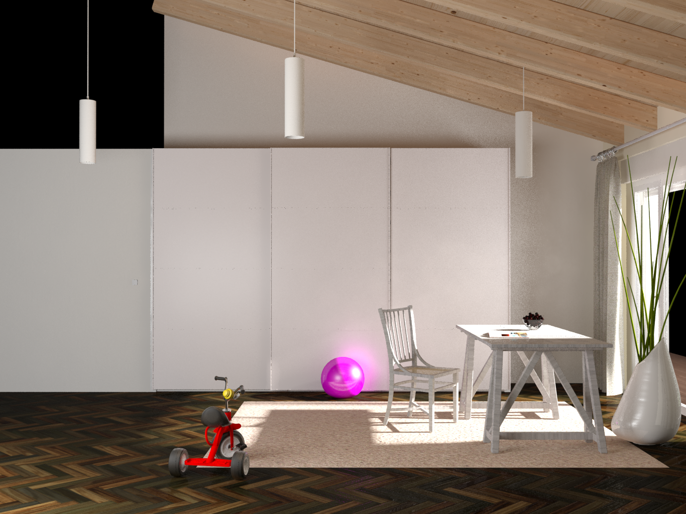
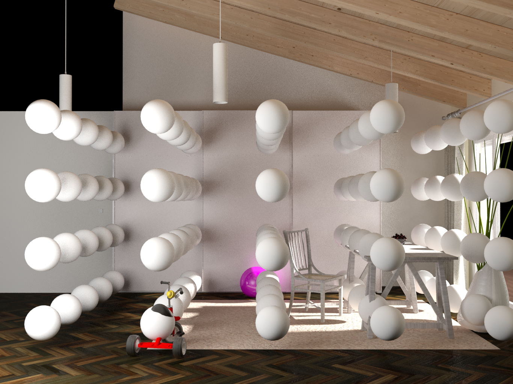

Front and side view of the measured room and the same room with spheres.
Note, that spheres were rendered at once, so they might occlude light to each other. Spheres are positioned in to the measured volume.
There are three light sources in this room: lamps hanging from the cealing
Download file with mesurements of this scene.



